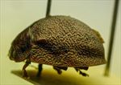
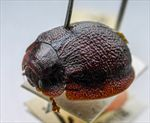
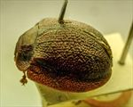
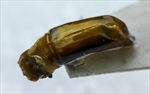
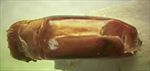
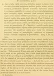

Click on images to enlarge
{kind=link}

Paropsis raucipennis type specimen, lateral view
{kind=link}

Paropsis raucipennis type specimen, oblique view
{kind=link}

Paropsis raucipennis type specimen, dorsal view
{kind=link}

Paropsis raucipennis type specimen, aedeagus
{kind=link}

Paropsis raucipennis type specimen, aedeagus
{kind=link}

Paropsis raucipennis, description
Name
Trachymela raucipennis (Blackburn, 1896)
Type specimen
Location: BMNH
Label data: “Type” (red-bordered circle), “6149 S.A. T”, “Blackburn coll. 1910-236.”, “Paropsis raucipennis Blackb.”
Male (aedeagus extracted and glued to card); Size: 10.3 x 9.2 x 5.1 mm; A-A: 1.60 mm; Aedeagus: LPE=4.475 mm; HCE/BL = 23.8% (estimated from photo of lateral view of type specimen).
Head brown; pronotum brown, strongly explanate, black mark in foveal area, elytra with punctures almost hidden in strongly wrinkled surface, the wrinkles taking a general lateral orientation, only a few small black verrucae present near apex, elytra strongly explanate.
N.B.: This type is a male, yet Blackburn mentions that his material consists of a unique female specimen!!?
Original description
[Original description shown in figure, translated from Latin using ChatGPT, 03/2026]
(Female) Broadly oval, very convex, the greatest height (seen from the side) placed just before the middle of the elytra; less shining; chestnut, with some spots on the prothorax, the suture of the elytra (and some verrucae), and the underside of the body (except the coxae and apex of the abdomen) black; antennae (except the base) darkened; head rather closely and somewhat finely punctulate; prothorax much longer than broad, by considerably more than double (nearly 2¾ to 1), widened a little beyond the middle from the apex, rather closely and somewhat finely (on the disc a little less closely, at the sides rather coarsely) punctate; the rest as in the preceding species (P. chapuisi); scutellum dull in the middle, closely punctate; elytra closely granulate-rugulose (so that the punctures are scarcely visible), behind the base scarcely distinctly impressed, otherwise as in the preceding; epipleura and basal ventral segment sculptured as in the preceding. Length 5 lines (~11.2 mm), width 4⅕ lines (~9.4 mm).
Notes
Blackburn (1896) deals with P. raucipennis as part of his subgroup i (i.e., those species with "strongly marked characters"). Within that group, he characterises it as:
(1) prosternum normal, but other characters exceptional, as follows:-;
(2) the exceptional characters lie in the elytral epipleurae;
(3) inner (horizontal) part of epipleurae nearly reaches the apex as a distinct ledge;
(4) basal ventral segment coarsely punctured;
(5) sides of prothorax strongly explanate;
(6) underside black;
(7) interstices of elytral punctures strongly rugulose, almost concealing the punctures.
Only the last item in his key separates raucipennis from latipes. This is almost certainly the same species as the Kangaroo Island specimens of Ta68.
References
Blackburn, T. 1896, "Revision of the genus Paropsis. Part I", Proceedings of the Linnean Society of New South Wales, vol. 21, no. 4, 637-693 (page 650).
Copyright © 2026. All rights reserved.